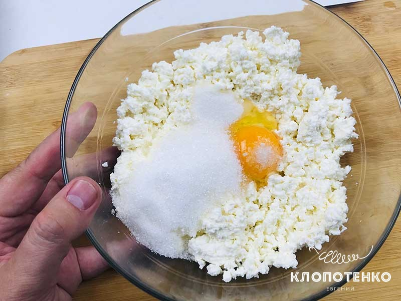
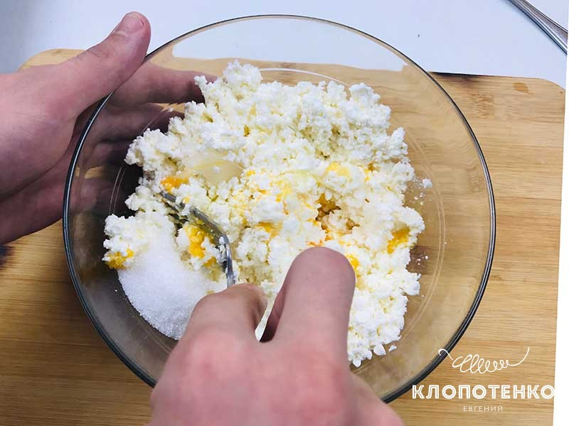
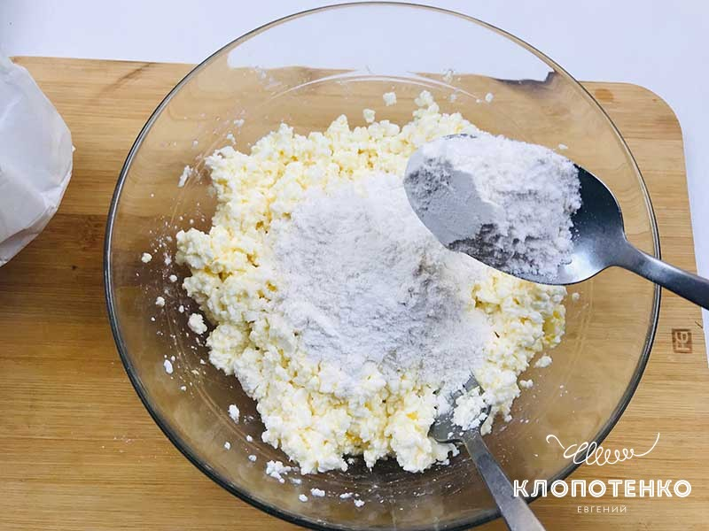
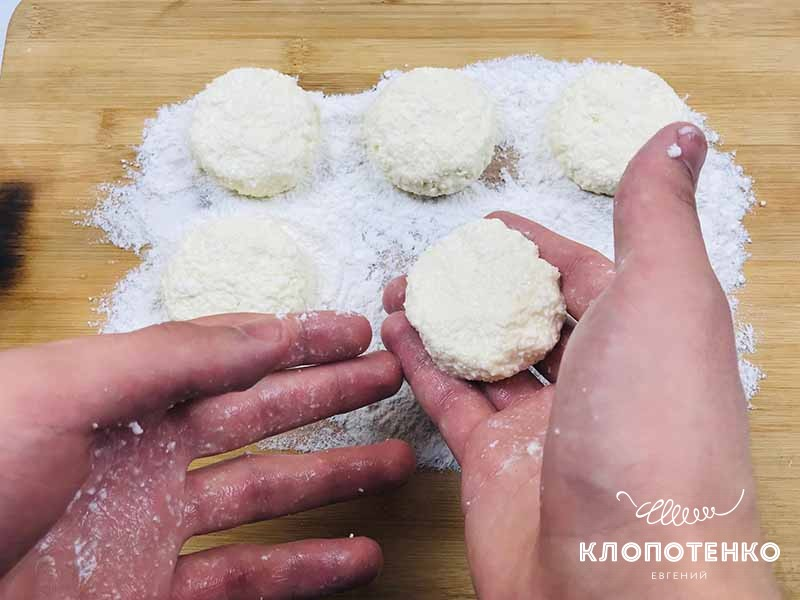
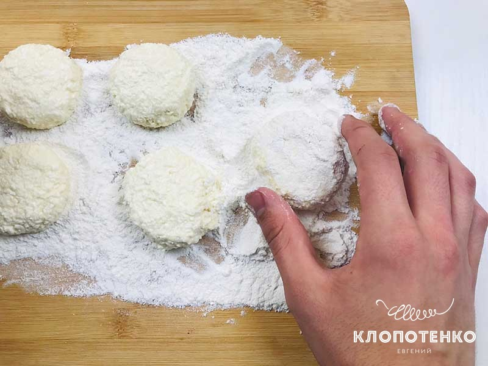
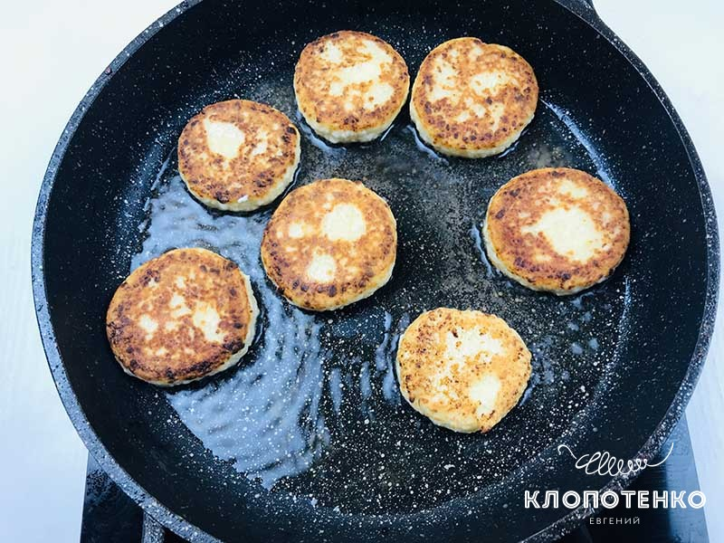
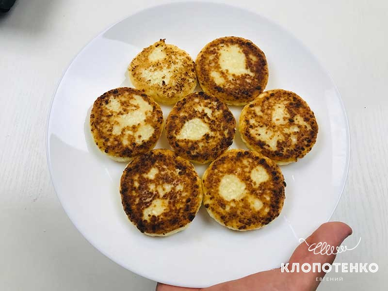

ПРОСТИЙ РЕЦЕПТ ПРИГОТУВАННЯ СИРНИКІВ

Всі люди, зазвичай, йдуть від простого до складного. Але ця історія не про мене. Спочатку я поділився з вами рецептом сирників з маком, потім ми приготували сирники з дорблю. І тільки зараз настав час приготувати звичайнісінькі, але не менш смачні сирники. Начебто це дуже проста страва, яка має виходити у всіх, але, чомусь виходить не завжди. Тому тут я спробую дуже докладно розповісти і показати, як зробити сирники, щоб все вдалося.
| Кухня | Європейська |
| Час підготовки | 7 хвилин |
| Час приготування | 10 хвилин |
| Порції | 2 |
1. У невелику миску викладіть 400 г сиру, 1 яйце, 3 ст. л. цукру, 10 г ванільного цукру і 1 дрібку солі. Найкраще використовувати домашній сир, куплений на базарі. Сир не має бути дуже кислим і надмірно вологим.
2. Змішайте всі інгредієнти до отримання однорідної маси. Ви можете скуштувати суміш в процесі перемішування і додати трохи цукру, якщо сирники вам будуть недостатньо солодкими.
3. Додайте до сиру 3 ст. л. борошна. Якщо сир занадто вологий, то додайте на 1 ст. л. борошна більше. Тут головне досягти балансу, щоб сирники не були занадто щільними.
4. Сформуйте з сирної маси невеликі кульки, потім трохи їх здавіть руками. Щоб сирна маса не прилипала до рук, можна змастити їх декількома краплями соняшникової олії.
5. Обваляйте сирники в борошні, щоб вони краще тримали форму і засмажились до красивої золотистої скоринки.
6. Обсмажте сирники на добре розігрітій пательні з 3-4 ст. л. соняшникової олії з кожного боку до отримання золотистої скоринки. Обсмажуйте сирники на середньому вогні, так сирники ідеально обсмажаться.
7. Готові сирники викладіть на тарілку, застелену паперовим рушником, щоб у нього вбрався зайвий жир. Подавайте сирники з джемом, варенням або сметаною. А можна просто трохи посипати їх цукровою пудрою через дрібне сито.
Готувати – це просто!